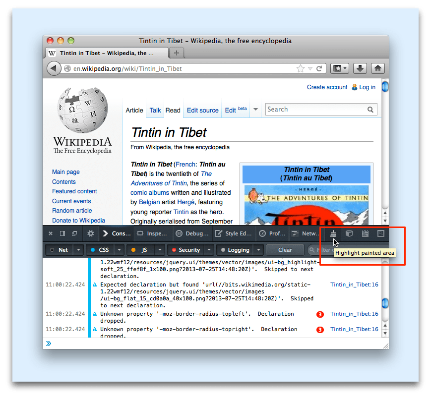
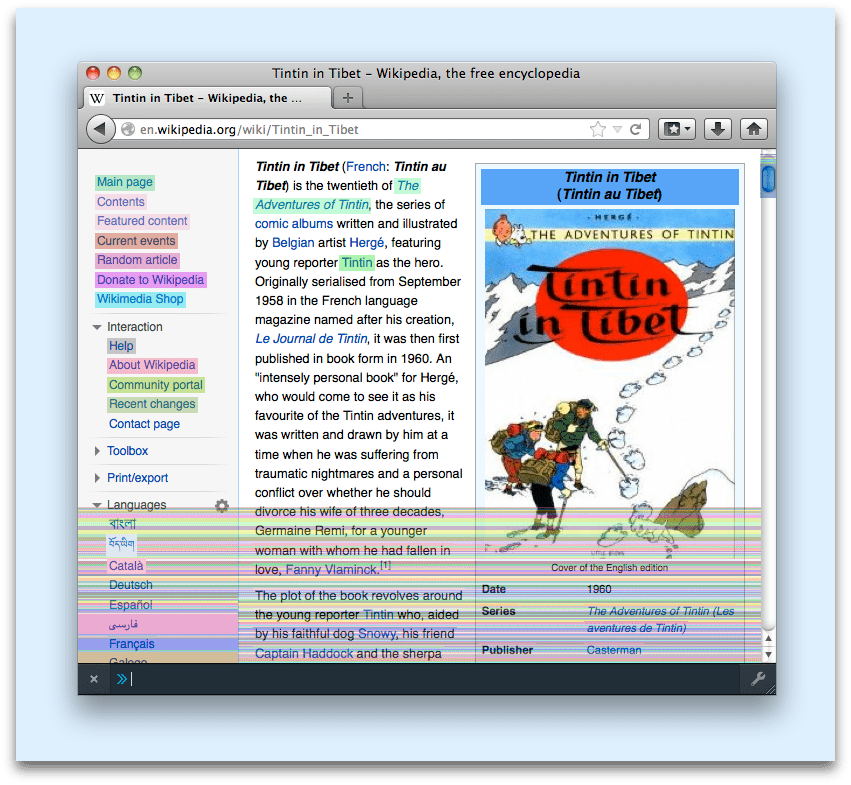

The paint flashing tool, when activated, highlights the part of a page that the browser needs to repaint in response to some input: for example, the user moving the mouse or scrolling. With the help of this tool you can figure out whether your website is causing the browser to repaint more than it needs to. Because repaints can be performance-intensive operations, eliminating unnecessary repaints can improve your website's responsiveness.
When the browser renders a web page it parses the HTML and CSS, determines how to lay it out, and then paints it to actually display the content on the screen. Whenever an event happens that might change a visible part of the web page then the browser must repaint some portion of the page. For example, a repaint will be needed if the user scrolls the page or moves the mouse pointer over an element with a :hover pseudo-class that changes the element's style.
Repainting can be an expensive operation, so the browser tries to minimize the amount of repainting that it needs to do. It tries to work out which parts of the screen are "damaged" and repaint only those. The browser also splits its model of the page into layers that it expects will be updated independently of each other. Layers are painted independently and then composited, so a change in the appearance of one layer does not trigger a repaint in any other layers, and when only the relation of two layers changes (in an animation, for example) no repaints are required at all.
The choices made by a web developer can hinder the browser here, causing it to trigger more repaints, and for more of the screen, than necessary. This can then cause a site to be slow responding to user input (also known as "janky"). That's where the paint flashing tool helps: by showing you the areas that the browser repaints in response to an event, you can see whether it is repainting more than it needs to.
Open the Toolbox, then click the icon labeled "Highlight painted area":

Then try using the page. After moving the mouse around and scrolling a bit, the above page looks like this:
In this example, there are two main sources of repaints:
:hover pseudo-classTo deactivate paint flashing, click the "Highlight painted area" icon in the Toolbox again.
One area where implementation choices can affect repaint efficiency is in CSS transitions. The example below shows two different ways to move an element using a CSS transition. The first way applies the transition to the element's margin-left, while the second way moves the element using the transform property.
<body>
<div id="container">
<div class="moving-box" id="moving-box-left-margin">Transition using margin-left</div>
<div class="moving-box" id="moving-box-transform">Transition using transform</div>
</div>
</body>
#container {
border: 1px solid;
}
.moving-box {
height: 20%;
width:20%;
margin: 2%;
padding: 2%;
background-color: blue;
color: white;
font-size: 24px;
}
#moving-box-left-margin {
transition: margin-left 4s;
}
#moving-box-transform {
transition: transform 4s;
}
body:hover #moving-box-left-margin{
margin-left: 74%;
}
body:hover #moving-box-transform {
transform: translate(300%);
}
To see the transition, move the mouse into the space below:
{{ EmbedLiveSample('Example_CSS_transitions', 600, 300) }}
Now switch paint flashing on, and try it again. You should see that the margin-left version triggers a series of repaints as the element moves, while the transform version only causes repaints in the start and end positions.
Why? Well, when you use transform, the browser creates a separate layer for the element. So when the element is moved, all that's changed is the relation of the two layers to each other, which is handled in composition: neither layer needs a repaint.
In this case, with a simple style, the extra repaints don't make much of a difference. But if the style were computationally expensive to paint, they might. It's difficult to know what optimizations the browser will make to minimize repaints, and they are subject to change from one version to the next. So testing your website with the paint flashing tool helps ensure that it's still performing optimally.